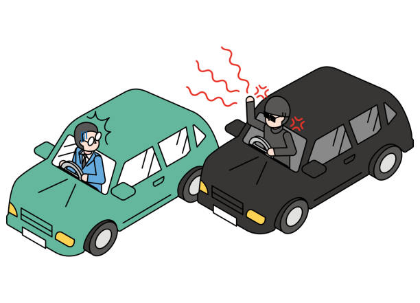

The Issue with Teen Driving Readiness
Many teen drivers are not fully prepared for the demands of driving on real roads. Often, they pass simplified driving exams that do not adequately test their readiness. This lack of preparation can lead to dangerous situations once they are unsupervised on the road. Understanding the signs that a teenager may not be ready to drive alone is crucial to ensuring their safety and the safety of others.

Driving Readiness Concerns
This Service Learning Project focuses on the readiness of teen drivers. It includes evaluating their ability to handle various driving situations, understanding traffic laws, and developing defensive driving skills. The goal is to ensure that teens are not only passing exams but are genuinely prepared for the responsibilities of driving.